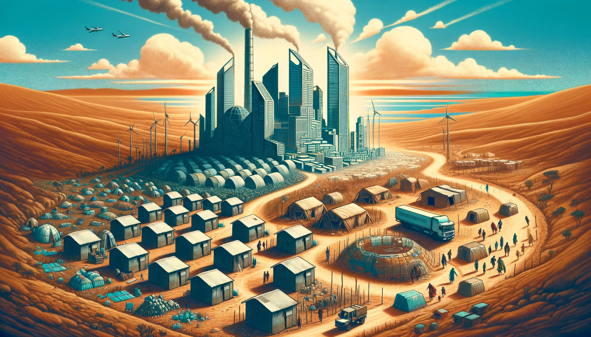
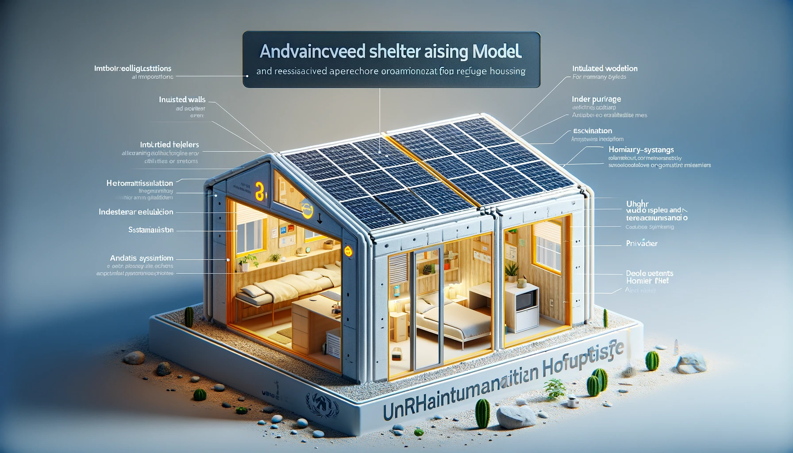
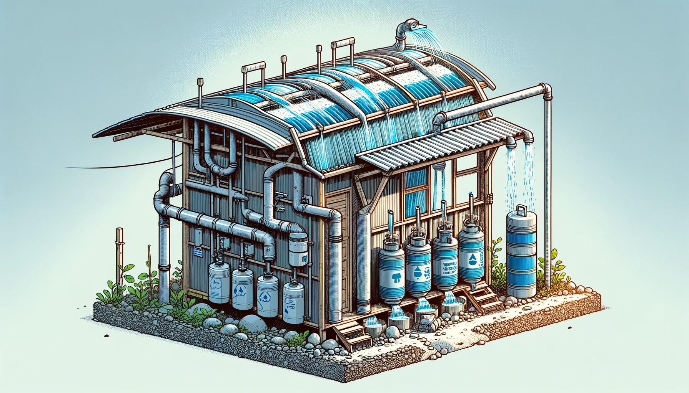
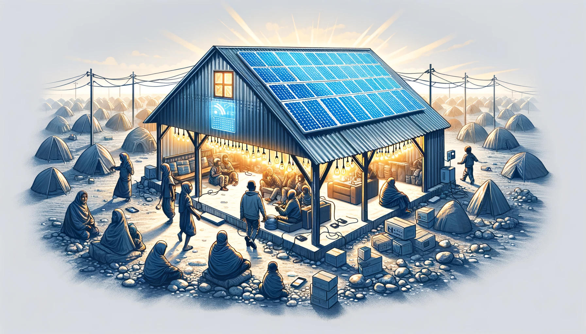
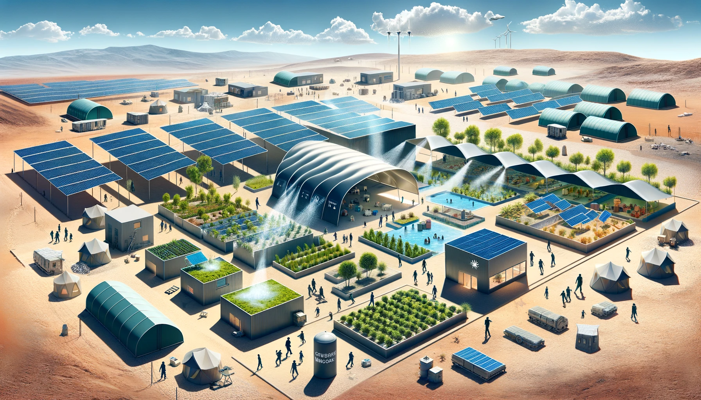
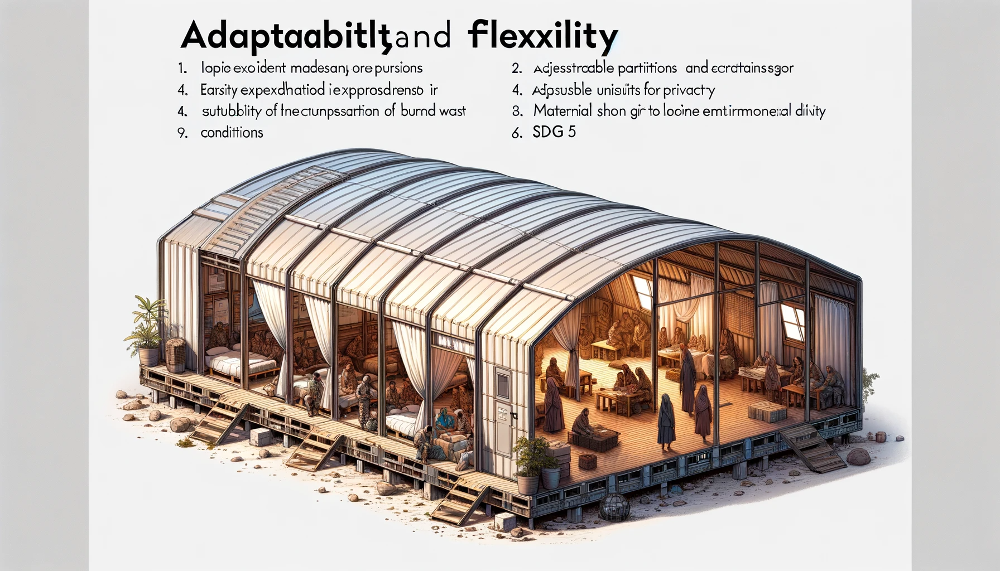
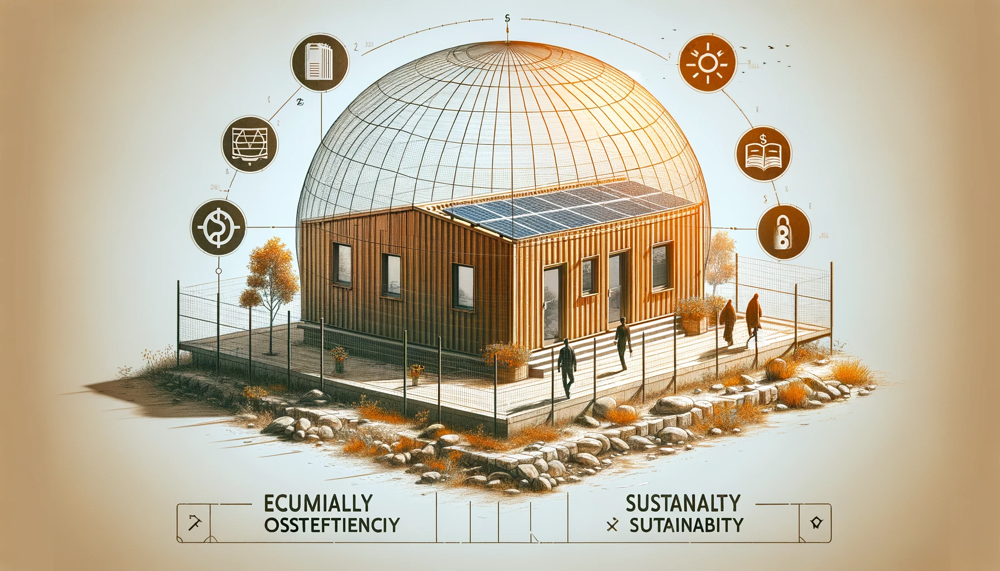
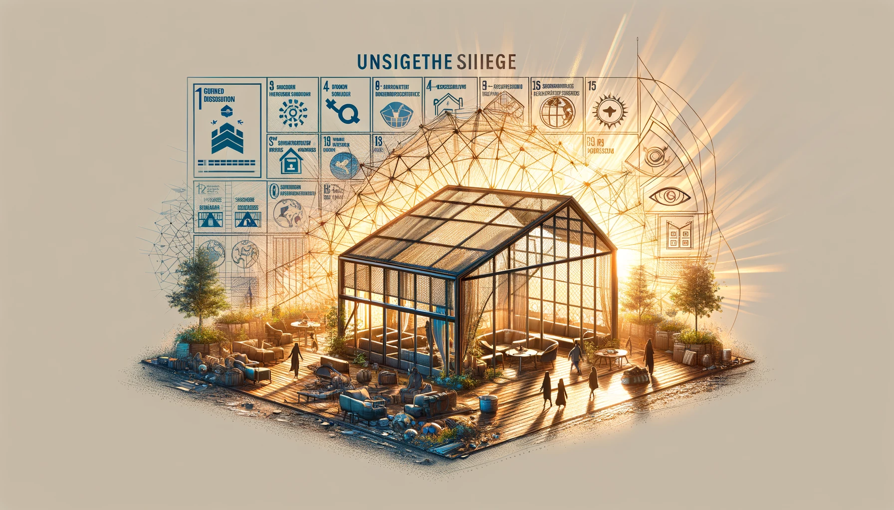

World Engineering Day Hackathon - Challenge 3
Team: Innovator Duo
Problem Statement
Extreme heat is a critical issue in refugee camps, where people face life-threatening conditions. Inadequate shelter exposes vulnerable populations, including children and the elderly, to scorching temperatures, resulting in heat-related illnesses and discomfort.
Current Situation
Refugee camps often consist of makeshift shelters made of materials like plastic and canvas. These materials trap heat, making the living conditions unbearable, especially during hot seasons. With climate change leading to rising temperatures, the situation is becoming increasingly perilous.
Case Study: Dadaab Refugee Complex, Kenya
The Dadaab Refugee Complex in Kenya serves as a stark example of the challenges faced by refugees. The extreme heat is not merely discomfort; it poses a life-threatening risk. In the absence of suitable solutions, residents of these camps endure harsh conditions, affecting their health and well-being.

Our Solutions
Innovator Duo is committed to addressing the extreme heat issue in refugee camps while aligning with the United Nations' Sustainable Development Goals (SDGs). Our holistic approach includes:
-
Enhanced Shelter Design: Our shelters are engineered to provide cooling and safety for inhabitants. We use advanced materials and construction techniques to create well-insulated, heat-resistant shelters.

-
Rainwater Collection and Filtration: We integrate a system to collect and filter rainwater, ensuring access to clean and safe drinking water. This not only addresses water scarcity but also reduces the burden on existing water resources.

-
Solar Panel System: Our shelters utilize solar panels to harness clean energy for lighting and essential devices, contributing to SDG 7 (Affordable and Clean Energy). Solar power not only reduces electricity costs but also minimizes environmental impact.

-
Ventilation and Cooling: Proper ventilation is essential to combat extreme heat. Our shelters feature advanced ventilation systems that promote airflow and cooling.

-
Flexible Design: Recognizing the diverse needs of displaced communities, our shelters are designed to be adaptable and flexible. They respect individuality and provide solutions responsive to unique situations.

Ventilation and Cooling
Proper ventilation is essential to combat extreme heat. Our shelters are designed with enhanced ventilation systems that promote airflow, keeping the interior cool and comfortable. This addresses SDG 3 (Good Health and Well-being) by reducing heat-related health risks.
Rainwater Collection and Filtration
Access to clean water is critical. Our shelters incorporate rainwater collection and filtration systems, ensuring a sustainable source of safe drinking water. This aligns with SDG 6 (Clean Water and Sanitation).
Solar Panel System
We harness solar energy to power lights and essential devices within the shelters, offering a sense of normalcy and hope to displaced individuals. This supports SDG 7 (Affordable and Clean Energy).
Material Selection
Our choice of environmentally friendly and durable materials not only provides comfort but also reduces the environmental impact. This reflects our commitment to SDG 13 (Climate Action).

Adaptation and Flexibility
Recognizing the diverse needs of displaced communities, our shelters are designed to be adaptable and flexible. They respect individuality and provide solutions responsive to unique situations, aligning with SDG 11 (Sustainable Cities and Communities).

Budget and Costs
We prioritize maximizing the value of human life and well-being while developing cost-effective solutions. Our shelters are designed to be affordable without compromising their ability to provide safe and sustainable living conditions, addressing SDG 1 (No Poverty) and SDG 10 (Reduced Inequalities).

Conclusion and Future Prospects
Innovator Duo's project is not just about engineering; it's a promise to humanity. We are laying the groundwork for a future where every displaced person has access to safe and dignified living conditions. Our vision is fully aligned with the United Nations' Sustainable Development Goals, and we believe that through innovation, empathy, and unwavering commitment, we can make a profound difference in the lives of those who endure the harshest realities of our world.
